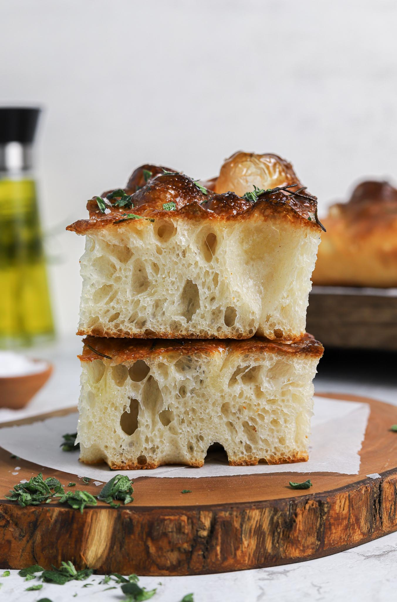

🏠
Foccacia 🍞🫒🌿
The most class, easy, and delicious bread in the world. No kneading, just
pure, unadulterated bread. Let's go make some bread.

Ingredients
- Water - 220g
- Yeast - 5g
- Sugar - 2g
- Bread flour - 250g
- Salt - 3g
- Olive Oil - 8g
Toppings
- Garlic
- Thyme
- Rosemary
- Anything else you want!
Prep
-
Mix the water, yeast, and sugar.
-
It's okay if there are tiny clumps of sugar! This is just a little
meal for the yeast to do its job.
- In a large mixing bowl, mix the flour and salt.
-
Slowly incorporate the wet mixture into the dry. Mix until it becomes a
dough.
- Add olive oil and mix.
- Let it sit at room temperature for 40 minutes.
-
Now, use your hands and stretch the bottom of the dough over to the top.
Do this for a couple minutes.
- Repeat the last 2 steps once more.
If you are going to bake at a different time, put the dough in the
fridge. Then before baking, let it rest at room temp for half an hr to a
full hr.
Bake
- Add topping if you would like at this stage.
- Flick a small amount of water so that it's evenly distributed over the surface.
- Preheat the oven to 440°F, and bake for 15 minutes.
Slice and Enjoy!